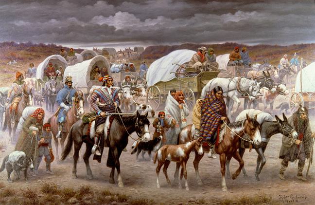
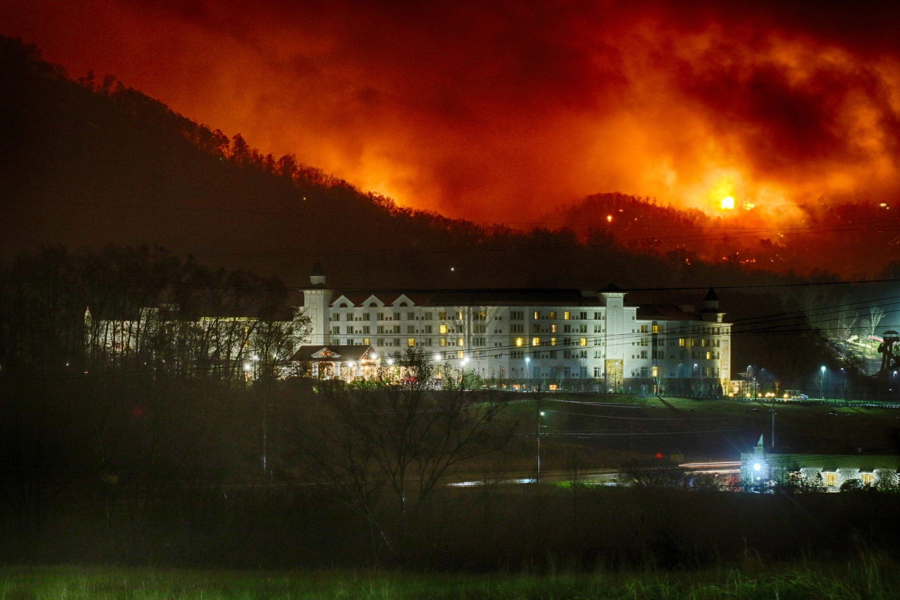

Cherokee Native American Land
Before being taken over by Gatlinburg founder Radford Gatlin, the land was mostly home to the Cherokee nation of Native Americans. They lived in the area for centuries and were key contributors to its preservation.
Civil War

Gatlinburg was one of the prime locations during the Civil War with resistant settlers for much of the war before finally inevitably turning in favor of the Conferderates.
Fires
Gatlinburg has suffered multiple tragic fires that have caused significant damage to the Smokey Mountains and other notable buildings. The most notable fires to impact Gatlinburg are the Fires of 1992 and the Fires of 2016.